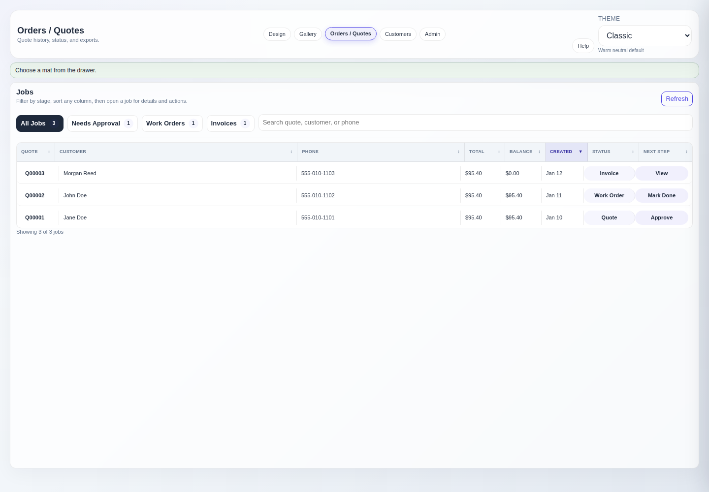
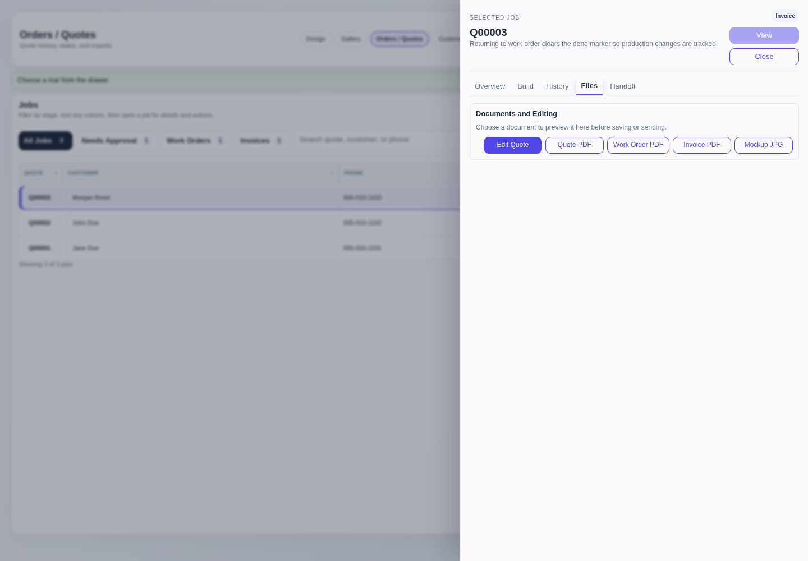

Track work after the quote
Orders & Quotes
Use the jobs table to find saved quotes, open the job inspector, advance approved work, preview paperwork, and prepare manual customer handoff.
Find and inspect a job
- Use All Jobs, Needs Approval, Work Orders, or Invoices for quick stage filtering.
- Use search to match a quote number, customer name, phone, or saved email.
- Select a column heading once for ascending order and again for descending order.
- Select a job row to open the inspector. Close it with Close, the backdrop, or Escape.
- Use Overview, Build, History, Files, and Handoff to move through the job record.

Status gates
Quote→Work order→Invoice
Approve quote
Customer approval is required before a quote can become a work order.
Mark build done
The operator must mark the work order complete before the job can become an invoice.
An invoice can return to work order when production changes are needed. Reopening clears the completion marker, so the build must be marked done again before reinvoicing.
Preview and save files
- Open Files. Choose Quote PDF, Work Order PDF, Invoice PDF, or Mockup JPG.
- Review the preview. Confirm customer details, framing components, layout, totals, and document type.
- Choose the next action. Save File downloads it, Open New Tab opens it separately, and Send carries the document name into Handoff.
Send does not attach or deliver the file.
Download the PDF or JPG and attach it manually. Local workstation URLs are not customer-accessible and are intentionally excluded from generated messages.
Customer handoff
- Review the saved email and phone recipient before using a handoff action.
- Edit the generated email subject, email body, or SMS body when the job needs specific wording.
- Copy Email copies the draft. Open Email Draft opens the workstation's configured email client. Copy SMS copies the text for manual sending.
- History records explicit copy or open actions. It does not claim that the message was delivered.
